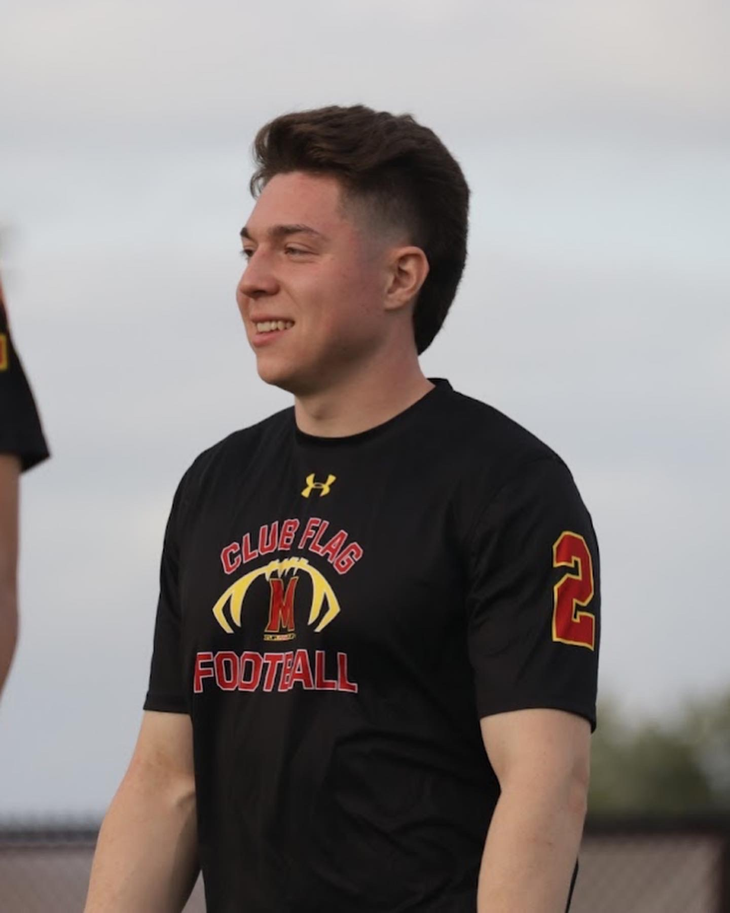

Michael Rovetto
Print and Broadcast Journalist

Experience
Color Commentator and Camera Man
Morris Sussex Sports
Oct 2020 - June 2021
I started developing my experience in broadcast journalism by covering high school sports in my area. I operated a professional-grade broadcast camera and often simultaneously commentated on live sports such as football, basketball, hockey, baseball, field hockey, and track and field. Experience includes 50+ games covered in 9 months.
Beat Writer, Maryland men’s Basketball
Terrapin Sports Central
Nov 2022 - Present
I cover the Maryland basketball team as a beat writer for the 2022-23 season. My tasks include writing preview articles for upcoming games, game stories for each game, and occasionally sidebar and feature stories. I am also responsible for attending press conferences with coaches and players throughout the week and after games.
Education
-
Associate of Arts, Journalism, County College of Morris, 2021
-
Pursuing Bachelor of Arts, University of Maryland, 2023
Skills
- Multimedia - Throughout my coverage of the Maryland men’s basketball team I was also tasked with sending tweets about any news regarding the team and its players and tweeting live updates about ongoing games.
- Video Recording and Editing - Familiar with recording and editing video packages with Adobe Premiere Pro. I have put together several video packages which I have filmed and edited on my own.
- News Writing - In a Jour-320 class my editor was a crime reporter for the Washington Post. We were tasked with covering a geographical beat and the surrounding county. I covered Hyattsville and chased stories in the area regarding spot news, crime, politics, and education.
- Organizational Skills - I believe preparation is one of the most important skills to have. I like to prepare in advance for stories and maintaining proper organization is a big part of that.
- AP Style - Before transferring to Maryland, I arrived with an in-depth knowledge of AP style. Dedicated to accurate storytelling and correctly presenting the facts.
Contact me